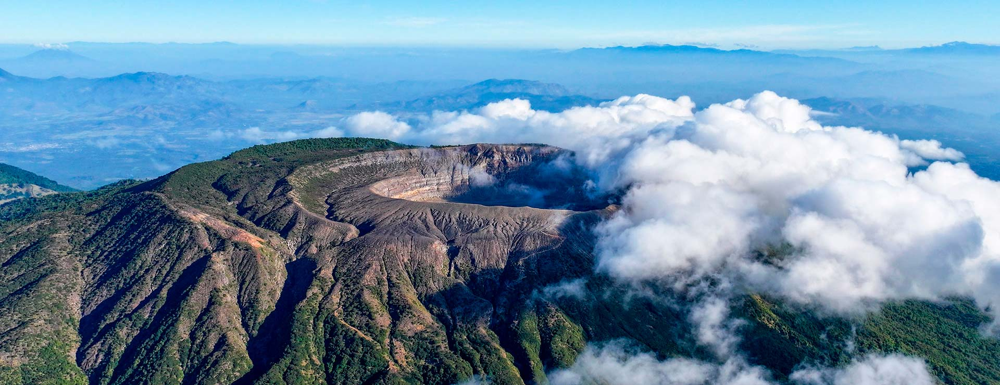
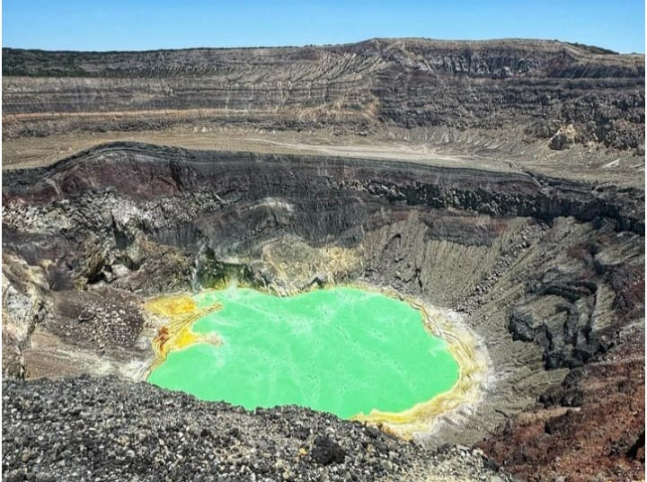
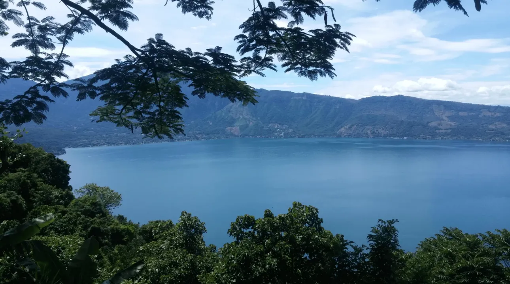
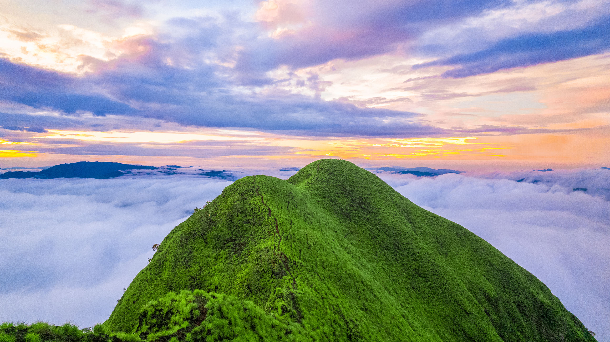

Top 3 de las mejores atracciones naturales de El Salvador


Volcan ilamatepec
Volcán Santa Ana Ilamatepec
También conocido como el volcán Santa Ana, este coloso es el más alto del país, con una elevación de
2.381 metros y aún "vivo".
Las últimas erupciones del volcán datan de 2005.
El Ilamatepec forma parte del Complejo Los Volcanes en la cordillera de Apaneca, y escalarlo no es
complicado. Una vez en la cima, podrás ver el cráter o disfrutar de las vistas del lago de
Coatepeque.
El viaje también se puede realizar de noche con total seguridad.
Cómo llegar
Desde San Salvador, tome la carretera Panamericana hacia Lourdes-Colón, donde debe tomar la salida
Sonsonate.
Justo después de pasar la ciudad de Armenia,
verás los carteles sobre dónde girar a la derecha hacia el Parque Natural Cerro Verde, donde
comienza la aventura.

Lago de Coatepeque
Lago de Coatepeque
Sus aguas azules y su alta oferta ecoturística hacen del lago de Coatepeque uno de los destinos
favoritos de salvadoreños y extranjeros, aquí se puede practicar kayak, jet ski y buceo.
Este lago volcánico cuenta con abundantes riquezas naturales. Los visitantes pueden observar una
gran variedad de aves residentes y migratorias o ir a pescar, bucear o montar en kayak, motos
acuáticas o paseos en bote.
Además, los alrededores invitan a practicar senderismo o ciclismo de montaña, disfrutar de las
hermosas vistas panorámicas cubiertas de exuberante vegetación.
Sus aguas cambian de azul a verde turquesa. Según autoridades del Ministerio de Ambiente y Recursos
Naturales de El Salvador, este es un fenómeno cíclico que ocurre de vez en cuando.
El cambio de color ha ocurrido en 1998, 2006, 2012, 2016, 2017, 2018 y 2019.

Cerro Eramon
Cerro Eramón
Esta joya ofrece a los visitantes una vista única que les permitirá apreciar múltiples destinos
emblemáticos de El Salvador al mismo tiempo.
Desde la cima, los visitantes pueden apreciar maravillosos paisajes, como el embalse de la
Central Hidroeléctrica 5 de Noviembre, la represa Cerrón Grande, el río Lempa, el río Sumpul y
los volcanes Chinchontepec, San Salvador, Guazapa y Chaparrastique. Mientras, hacia el oeste, se
puede
apreciar el imponente volcán Izalco, Cerro Verde, volcán Ilamatepec y volcán El Chingo.
Este lugar es perfecto para practicar senderismo, acampar y disfrutar de espectaculares
amaneceres y atardeceres, que dejarán a los visitantes con recuerdos inolvidables.
El clima es caluroso, así que hidrátate constantemente y lleva todo lo necesario para vivir la
mejor experiencia.
El río Turicenter de Sumpul también forma parte de este atractivo, con aguas frescas y
cristalinas, por lo que debes recordar llevar traje de baño para disfrutar de un chapuzón